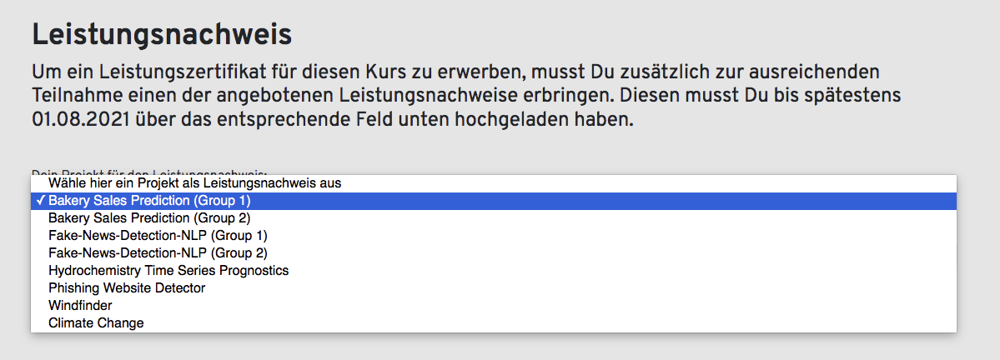
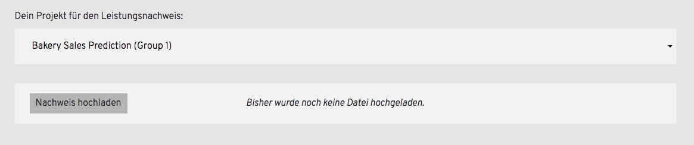
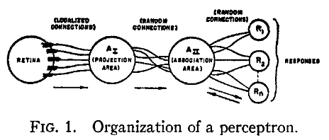
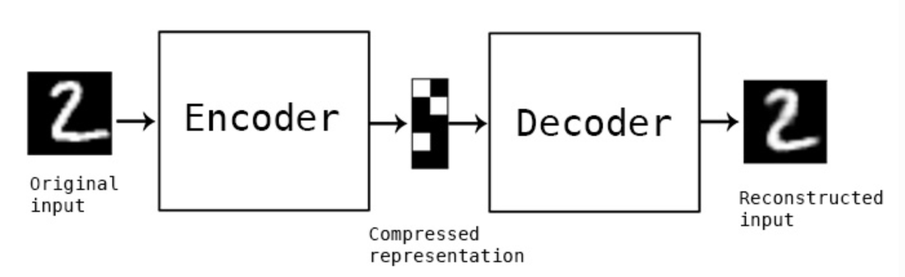
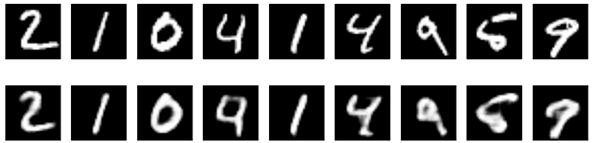
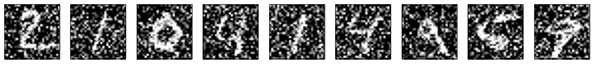

Deep Learning
from Scratch
Overview of different Neural Networks
Course starts soon..


- FFNN
- Encoder/Decoder
- CNN
- RNN/LSTM
- GAN
- Transformer
The network we saw during the course:
input layer, hidden layer(s), output layer
Introduced in 1958 as the perceptron [1]
Biologically inspired
What is an encoder doing?



What is a convolution?
Image from the website[5]. Here also the source code of the Toolbox [6]
A leap into language processing
they [Neural Networks] accept a fixed-sized vector as input (e.g. an image) and produce a fixed-sized vector as output (e.g. probabilities of different classes). [..] The core reason that recurrent nets are more exciting is that they allow us to operate over sequences of vectors: Sequences in the input, the output, or in the most general case both. [1]
What does adversarial mean?
Generative Adversarial Nets, Ian J. Goodfellow, Jean Pouget-Abadie, Mehdi Mirza, Bing Xu, David Warde-Farley, Sherjil Ozair, Aaron
Courville, Yoshua Bengio,
NIPS'14: Proceedings of the 27th International Conference on Neural Information Processing Systems - Volume 2December 2014 Pages 2672–2680
Where is this name coming from?
The biggest change is the attention mechanism
- Finishing preparing the presentation
- You are done! Missing only the project!